|
|||
|
| • Mechanika » Kinematyka, Dynamika, Praca, moc, energia, Grawitacja, Ruch obrotowy, Statyka, Relatywistyka • Fizyka molekularna i ciepło » Termodynamika, Gazy, Ciecze, Ciała stałe • Elektryczność i magnetyzm » Elektrostatyka, Pole elektrostatyczne, Prąd elektryczny stały, Magnetyzm, Elektromagnetyzm • Zjawiska falowe » Ruch drgający i falowy, Akustyka, Drgania i fale elektromagnetyczne, Optyka • Elementy fizyki wpółczesnej » Dualizm korpuskularno-falowy, Fizyka atomowa, Fizyka jądrowa • Astronomia » Astronomia • Zagadnienia matematyczne » Wektory, Pochodna funkcji, Logarytmy • Tablice » Jednostki wielkości fizycznych, Właściwości fizyczne, Właściwości elektromagnetyczne i falowe, Stałe fizyczne, Tablice matematyczne • O stronie » Autorzy, Bibliografia | |
|
|
Błyskawice i pioruny od zawsze budziły w ludziach strach i grozę. W cywilizacjach antycznych pioruny były utożsamiane z bronią bogów, a ich moc i zagadkowość ciągnęły śmiałków do poznania tych zjawisk. Dzisiaj wiemy już całkiem sporo o prawach, które rządzą zjawiskami związanymi z elektrycznością. Może poznając część z tych praw, zdobywamy wiedzę starożytnych bogów?...
Ładunek elektryczny - prawo Coulomba
Wszystkie ciała zbudowane są z ogromnej liczby atomów. Atomy zaś zbudowane są z jądra atomowego, oraz krążących wokół niego elektronów. Zarówno jądro, jak i elektrony obdarzone są ładunkiem elektrycznym. Jądro jest dodatnie, a elektrony są ujemne. Oznaczamy te ładunki znakami "+" i "-". Oznaczenie który ładunek jest dodatni, a który ujemny było i jest całkowicie umowne i nie miało by to znaczenia, gdyby naukowcy zrobili to na odwrót. Ładunek pojedynczego elektronu zwany jest ładunkiem elementarnym, oznaczamy go symbolem: -e (minus, ponieważ ładunek elektronu jest ujemny), a ma on wartość: 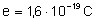 . C oznacza jednostkę, którą nazywamy kulombem. Jest ona podstawową jednostką układu SI. Taki sam ładunek tylko, że dodatni ma jądro atomu wodoru. Natomiast atomu helu ma ładunek 2e. Ładunek atomu jest uzależniony od liczby atomowej danego pierwiastka. Każde jądro atomowe składa się z protonów, których jest dokładnie tyle ile wynosi liczba atomowa (porządkowa) danego pierwiastka, oraz pewnej liczby neutronów. Tylko protony w atomie są obdarzone ładunkiem, a wartość tego ładunku wynosi +e. Neutrony w jądrze atomowym nie są obdarzone ładunkiem. W jądrze wodoru występuje tylko jeden proton i to właśnie dlatego jego jądro ma ładunek równy e. Padło już sformułowanie, że ładunek elektronu jest ładunkiem elementarnym. Jest on tak nazwany, ponieważ każdy spotykany ładunek w przyrodzie jest całkowitą wielokrotnością ładunku elementarnego. Nie występują cząsteczki, które mają ładunek np. 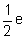 . Jeszcze innym powodem, dla którego powstało określenie ładunku elementarnego jest sposób w jakim elektryzują się ciała. Jeżeli w jakimś ciele znajduje się tyle samo elektronów co protonów, to mówimy, że ciało to nie jest naelektryzowane. Jeżeli występuje w nim więcej elektronów niż protonów to mówimy, że ciało to jest naelektryzowane ujemnie. W przeciwnym przypadku - więcej protonów niż elektronów - ciało jest naelektryzowane dodatnio. Dlatego jeżeli jakiekolwiek ciało jest naelektryzowane (czy to dodatnio czy ujemnie), to jego ładunek jest zawsze całkowitą wielokrotnością ładunku elementarnego. 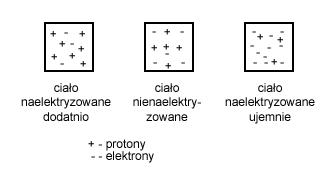 Jak wiemy z doświadczeń, naelektryzowane ciała oddziałują na siebie. Jeżeli naładujemy dwie kulki ładunkami odpowiednio q1 i q2, to zaobserwujemy, że działają one na siebie pewną siłą. Siłę tą scharakteryzował francuski fizyk Karol August Coulomba w 1785r:
Siłę tą nazywamy siłą Coulomba. Zależy ona jeszcze od otoczenia, w jakim znajdują się te ładunki 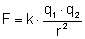 . Właśnie współczynnik proporcjonalności "k" zależy od otoczenia. Dla próżni 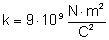 . By uogólnić wzór stosuje się inne oznaczenie współczynnika proporcjonalności: 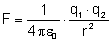 , gdzie to przenikalność dielektryczna próżni (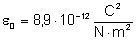 ). I tak wygląda wzór na siłę, z jaką oddziałują na siebie dwa ładunki punktowe umieszczone w próżni w odległości r. Jeżeli ładunki te umieszczone są w innym środowisku niż próżnia to stosuje się nieco inny współczynnik proporcjonalności: 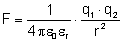 , gdzie to względna przenikalność dielektryczna danego środowiska. Dla próżni wynosi ona 1. W zależności od środowiska przyjmuje ona inne wartości, a jakie to można dowiedzieć się z odpowiednich tabel. Warto też wiedzieć, że w powietrzu przenikalność dielektryczna jest prawie taka sama jak w próżni, więc prawie zawsze stosuje się wzór dla próżni. Łatwo zauważyć, że prawo Coulomba jest bardzo podobne do prawa powszechnego ciążenia Newtona. Występuje jednak zasadnicza różnica. Siły grawitacji były zawsze siłami przyciągania. Siły Coulomba mogą zarówno przyciągać dwa ciała jak i je odpychać od siebie. Zależy to od ładunku tych ciał. Jeżeli ładunki tych ciał są różnoimienne (jeden ładunek jest dodatni, a drugi ujemny) to ciała te będą się wzajemnie przyciągać. W przeciwnym wypadku (oba ładunki są dodatnie, albo oba są ujemne) ciała te będą się wzajemnie odpychać. Aby uświadomić sobie jak mocne jest to oddziaływanie w porównaniu do oddziaływania grawitacyjnego wyliczmy, z jaką siłą oddziałują na siebie dwa ładunki punktowe oddalone od siebie o 1 metr, naładowane oba ładunkiem 1C: 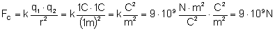 W dziale grawitacja wyliczyliśmy, z jaką siłą oddziałują na siebie dwa ciała o masie 1 kg, oddalone od siebie o 1 m: 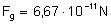 Różnica spora - prawda? Elektryzowanie ciał
Elektryzowanie ciał to proces przekazywania im ładunku. Polega on oczywiście na dodaniu, lub odebraniu elektronów z tego ciała. Wyróżniamy trzy sposoby elektryzowania: przez potarcie, dotyk i indukcję. Elektryzowanie przez potarcie
Na pewno znacie takie zjawisko, które możemy bardzo często zaobserwować po wymyciu i wysuszeniu włosów, kiedy próbujemy je rozczesać. Bardzo często takie włosy przyciągają się z grzebieniem. Otóż podczas czesania włosów następuje proces elektryzowania ich. Włosy takie "stają dęba", ponieważ naładowane są jednoimiennymi ładunkami (wszystkie włosy są naelektryzowane tak samo - nie ma możliwości, by jeden włos naelektryzował się dodatnio, a drugi ujemnie). Ładunkiem o przeciwnym znaku ładuje się grzebień. By sprawdzić, że grzebień też jest naelektryzowany można wykonać proste doświadczenie. W tym celu należy taki grzebień zbliżyć do małego strumyka wody lecącej z kranu. Strumyk ten powinien się odchylić od pionu. Odchylenie to będzie tym większe im bardziej naelektryzowany był grzebień. Elektryzowanie przez potarcie polega na tym, że podczas pocierania dwóch ciał, jedno z nich "gubi" elektrony, a drugie je przyłącza. W ten sposób to pierwsze ciało ładuje się ładunkiem dodatnim, a drugie ujemnym. Tylko jak sprawdzić które ciało naelektryzowało się dodatnio, a które ujemnie. Problem nie jest taki prosty, ale możemy wykorzystać doświadczenia innych. Otóż wiadomo, że jeżeli laskę ebonitową pocieramy wełną to laska ta naładuje się ładunkiem ujemnym a wełna dodatnim. Natomiast jeżeli laskę szklaną pocieramy jedwabiem, to szkło naelektryzuje się dodatnio, a jedwab ujemnie. Wiedząc to łato już możemy ocenić czy ładunek na jakimś ciele jest dodatni, czy ujemny. 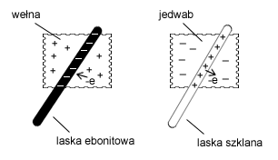 Elektryzowanie przez dotyk
Aby użyć tej metody, musimy już mieć jakieś naelektryzowane ciało. Często stosuje się do tego naelektryzowaną ujemnie laskę ebonitową. Jeżeli więc mamy taka laskę i obojętną kulkę metalową (odizolowaną od otoczenia), to możemy stwierdzić, że na jednym ciele jest nadmiar elektronów (laska ebonitowa), a na drugim występuje równowaga (ciało jest obojętne). W przyrodzie możemy zaobserwować zjawisko wyrównywania się stanów, tzn. po zetknięciu się danych dwóch ciał ładunki na nich zmienią się tak by na obu były równe. Elektrony z laski ebonitowej przepłyną na metalową kulkę. Laska ebonitowa nadal będzie naładowana ujemnie, ale już ładunek ten będzie mniejszy. Natomiast obojętna dotychczas kulka zostanie naelektryzowana i ładunek laski i kulki będzie taki sam. Elektryzowanie przez indukcję
By zaobserwować jak działa ten rodzaj elektryzowania potrzebny nam będzie elektroskop i naładowana ujemnie laska ebonitowa. Niech elektroskop będzie elektrycznie obojętny. Naelektryzowaną laskę zbliżmy do elektroskopu, ale go nie dotykajmy. Zauważymy, że listki elektroskopu wychylą się. Wiemy, że ładunki ujemne się odpychają. Ujemnie naelektryzowana laska ebonitowa odpycha elektrony z elektroskopu i uciekają one do jego wnętrza na jego listki. We wnętrzu elektroskopu występuje nadmiar elektronów a na zewnątrz ich niedobór (tam, do którego miejsca zbliżyliśmy laskę). Jeżeli laskę oddalimy od elektroskopu, nadmiar elektronów z wnętrza elektroskopu zostanie zniwelowany, bo elektrony wrócą z powrotem na swoje poprzednie miejsce. 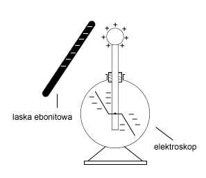 Zbliżmy jeszcze raz laskę do elektroskopu, tak by jego listki się odchyliły. Ale tym razem dotknijmy palcem (nie laską) elektroskopu. Nasz palec będzie działał jak uziemienie. Elektrony odepchnięte na listki będą "szukały" dalszej drogi by jak najdalej uciec od ujemnej laski i przez nasz palec opuszczą elektroskop. Listki z powrotem opadną. Zabierzmy teraz palec z elektroskopu - sytuacja nie zmienia się. Ale zabierzmy teraz naelektryzowaną laskę, którą cały czas trzymaliśmy blisko elektroskopu, wówczas listki ponownie się odchylą. Dzieje się tak dlatego, że elektrony uciekły przez nasz palec bo były odpychane, przez laskę. Ale jak zabraliśmy palec i laskę, to okazało się, że w elektroskopie jest niedobór elektronów, bo miały odciętą drogę powrotu (najpierw zabraliśmy palec, a dopiero później laskę). 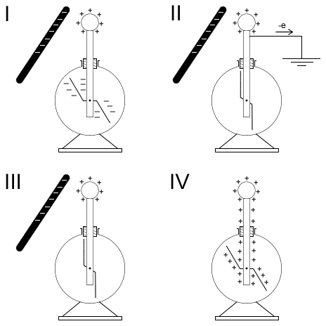 Rozkład ładunku na powierzchni przewodnika
Do tej pory mówiliśmy przeważnie o ładunku punktowym (Patrz Pole elektrostatyczne). Ale sytuacja taka, że źródłem pola jest ładunek skupiony w jednym punkcie jest w zasadzie niemożliwa. Najczęściej do czynienia mamy z ładunkami rozmieszczonymi na przewodniku liniowym czy powierzchni. Dlatego też stosuje się pojęcie liniowej gęstości ładunku lub powierzchniowej gęstości ładunku: 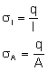 gdzie l to długość przewodnika - liniowa gęstość ładunku, natomiast A to powierzchnia na której rozmieszczony jest ładunek w przypadku powierzchniowej gęstości ładunku. Do badania rozkładu ładunku na powierzchni służy nam elektroskop i metalowa kulka umieszczona na izolowanym uchwycie. Dzięki tej kulce możemy zbierać ładunek z badanej powierzchni. Naelektryzujmy konduktor kulisty. Za pomocą kulki zbierzmy ładunek z wnętrza konduktora i przenieśmy go na elektroskop. Wynik jest zaskakujący, bo listki konduktora nie wychylają się. Oznacza to, że ładunek nie gromadzi się we wnętrzu konduktora. Powtórzmy doświadczenie, ale tym razem dotknijmy kulką zewnętrzną część konduktora i przenieśmy ładunek na elektroskop. Tym razem zgodnie z oczekiwaniami listki elektroskopu wychylają się. 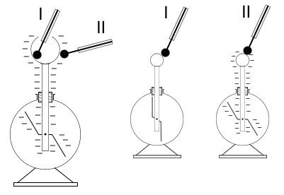 Wykonajmy kolejne doświadczenie. Naelektryzujmy takim samym ładunkiem dwie kule. Niech większa kula ma promień równy R, a mniejsza promień r. Teraz dotknijmy naszą izolowana kulką jedną z naelektryzowanych kul i przenieśmy ładunek na elektroskop. Następnie rozładujmy elektroskop. I powtórzmy doświadczenie przenosząc ładunek z drugiej kuli. Porównując wychylenia listków elektroskopu stwierdzimy, że bardziej wychyliły się po przeniesieniu ładunku z mniejszej kuli. 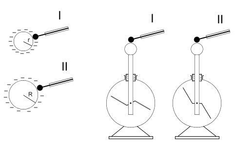 Możemy wysnuć następujący wniosek: na bardziej zakrzywionej powierzchni gęstość powierzchniowa ładunku jest większa. Pojemność elektryczna
Doświadczenia pokazują, że takie wielkości jak dostarczony ładunek na przewodnik i potencjał tego przewodnika są wielkościami proporcjonalnymi. Oznacza to, że stosunek: jest dla przewodnika wielkością charakterystyczną. Oznaczono tę wielkość jako pojemność elektryczna danego przewodnika. Wielkość tę oznaczamy symbolem C, a jednostką pojemności jest Farad. 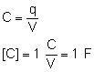 Jeden farad to pojemność takiego przewodnika, którego potencjał wynosi 1 wolt po naładowaniu go ładunkiem 1 kulomba. Ze wzoru mogłoby wynikać, że pojemność przewodnika zależy od przyłożonego ładunku lub od potencjału tego ładunku. Jednak jak było to wspomniane te wielkości są proporcjonalne i pojemność na zależy od innego czynnika. Tym czynnikiem jest wielkość przewodnika. Łatwo to sobie wyobrazić, bo większe przewodniki mają większa pojemność elektryczną. Kondensatory - energia kondensatorów
Jednak pojęcie pojemności przewodnika nie jest wykorzystywane w przypadku pojedynczych przewodników, ale raczej w ich układach. Takim układem przewodników jest kondensator. Tworzą go dwa przewodniki o różnych kształtach i wymiarach. Bardzo często przewodniki te nazywamy okładkami kondensatora. Przewodniki te ładują się takim samym ładunkiem, ale o różnych znakach. Bardzo ważną wielkością w kondensatorze jest różnica potencjałów tych przewodników. Jak już było wspomniane wcześniej, taką różnicę potencjałów nazywamy napięciem. Różnica potencjałów jest tym większa im większy ładunek naniesiemy na jeden z przewodników. Stosunek tego ładunku do napięcia kondensatora jest stały i nazywa się go pojemnością kondensatora. 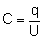 Także w tym przypadku jednostką pojemności jest farad. Naładowany kondensator ma energię potencjalną. Aby obliczyć jej wartość musimy wyznaczyć pracę potrzebną do naładowania kondensatora. Skorzystajmy ze wzoru: Jednak podczas ładowania kondensatora napięcie na okładkach zmienia się. Więc chcąc użyć ten wzór musimy zastosować średnie napięcie. Skorzystamy z następujących faktów. Wiemy, że przed naładowaniem kondensatora napięcie na jego okładkach równe jest zero, a po naładowaniu wynosi U. Drugim faktem jest to, że napięcie zmienia się z powodu dostarczanego ładunku. Ale wiemy, że napięcie i ładunek są wielkościami proporcjonalnymi (wykresem zależności napięcia od ładunku jest linia prosta). Dlatego szukając średniego napięcia przy ładowaniu kondensatora, możemy skorzystać ze średniej arytmetycznej: 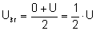 Podstawiając do wzoru na pracę: 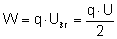 Tyle wynosi praca, jaką należy wykonać by naładować kondensator, więc tyle też wynosi energia potencjalna naładowanego kondensatora. 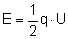 Łączenie kondensatorów
Kondensatory możemy łączyć w baterie. Oznacza to budowanie układów kondensatorów, który to układ (ta bateria) ma swoją pojemność. Omówimy tu dwa sposoby łączenia: szeregowe i równoległe oraz sprawdzimy ile w tych przypadkach wynosi pojemność układu. Taką pojemność nazywamy pojemnością zastępczą. Mówiąc inaczej jest to pojemność takiego kondensatora, którym moglibyśmy zastąpić ten układ i nie wywołać przy tym zmiany pojemności. I jeszcze jedna uwaga, na schematach kondensator przedstawiamy tak: 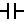 Łączenie szeregowe
Połączmy trzy kondensatory w sposób szeregowy. Niech ich pojemności wynoszą odpowiednio C1, C2 i C3. Jeden koniec układu naelektryzujmy dodatnio a do drugiego podepnijmy uziemienie. Pierwsza blaszka na pierwszym kondensatorze naładowana jest przez nas dodatnio ładunkiem +Q. Pod wpływem indukcji druga blaszka tego kondensatora elektryzuje się ujemnie ładunkiem ujemnym ale o takiej samej wartości: -Q. Ale kiedy elektryzuje się ujemnie pobiera elektrony z pierwszej blaszki drugiego kondensatora, który w konsekwencji naładowany jest dodatnio ładunkiem +Q. Druga okładka drugiego kondensatora ładuje się przez indukcję ładunkiem -Q. Następne kondensatory ładują się analogicznie jak poprzednie. Zawsze jednak na blaszkach powstają ładunki +Q lub -Q. Więc przyjmujemy, że ładunek dostarczony do każdego kondensatora wynosi Q. 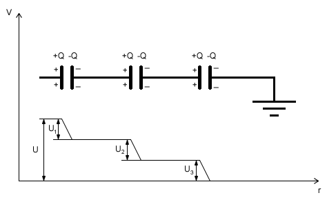 Wyliczmy ile wynosi pojemność każdego kondensatora: 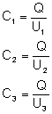 Spójrzmy teraz na wykres zależności potencjału od długości przewodnika. Na jednym końcu wynosi on V (ten koniec, na który naniesiony był ładunek). Drugi koniec układu jest uziemiony, a wszystko co jest uziemione ma potencjał równy zero. Widzimy, że spadki potencjału mają miejsce na kondensatorach i spadki te są równe napięciu, jakie występuje na okładkach kondensatora. Na wykresie widać że napięcie całego układu (różnica potencjałów przewodnika przed pierwszym kondensatorem i przewodnika uziemionego) jest równa sumie napięć wszystkich kondensatorów. Wyliczmy zatem te napięcia na każdym kondensatorze i wyliczmy ich sumę: 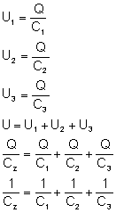 CZ to pojemność zastępcza całego układu (pojemność baterii kondensatorów). Takim wzorem obliczamy pojemność układów kondensatorów połączonych szeregowo. 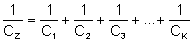 Warto wiedzieć, że pojemność zastępcza układu połączonego szeregowo jest zawsze mniejsza od najmniejszej pojemności łączonych kondensatorów Łączenie równoległe
Połączmy teraz trzy kondensatory w sposób równoległy. Niech każdy z nich ma pojemność równą odpowiednio C1, C2 i C3. Tak jak poprzednio niech jeden koniec układu zostanie naładowany dodatnio, a drugi niech będzie uziemiony. Mamy do czynienia z następującą sytuacją: na kondensatorze pierwszym znajduje się ładunek Q1, na kondensatorze drugim - ładunek Q2, a na trzecim - Q3. Ale na wszystkich kondensatorach mam identyczne napięcie, bo wszystkie lewe (dostosuj rysunek do opisu - okładki po lewej stronie mają być naładowane dodatnio) okładki są połączone przewodnikiem, więc mają wszystkie równy potencjał V. Natomiast prawe okładki są uziemione, więc ich potencjał równy jest zero. 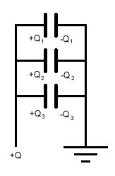 Ładunek naniesiony na lewą stronę układu rozmieścił się po okładkach. Suma ładunków na poszczególnych kondensatorach równa jest ładunkowi dostarczonemu przez nas (ładunek całkowity). 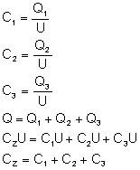 Ostatni wzór mówi nam jak liczy się pojemność układu kondensatorów połączonych równolegle. Pojemność zastępcza tak połączonych kondensatorów jest równa sumie poszczególnych pojemności.
|
| Copyright © 2003- fizyka.kopernik.mielec.pl |